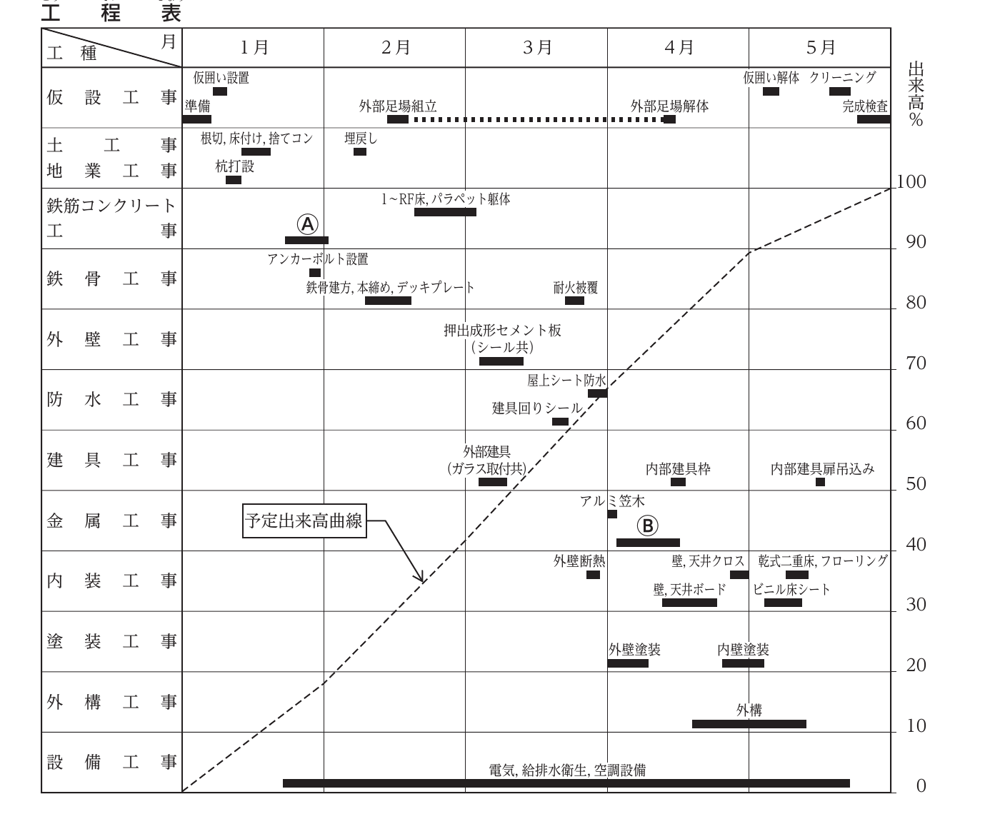

建築工事の現場を管理していく上で、施工計画時におけるあなたの考えについて、今日までの経験を踏まえ、次の1.及び2.の問いに答えなさい。 なお、建築工事には、建築設備工事は含まれないものとする。
| イ 新築 | 鉄筋コンクリート構造 共同住宅 新築工事／工期 2024年1月〜2024年12月 |
|---|---|
| ロ 解体 | 鉄筋コンクリート構造 共同住宅 解体工事（全面解体、杭引抜き共）／工期 2024年1月〜2024年5月 |
| 立地条件 | 敷地周辺は戸建住宅やマンションが立ち並ぶ住宅街で、敷地北側に幅員6mの道路が接する |
| 主要用途 | 共同住宅 20戸（5LDK） |
| 面積 | 敷地 2,350.00㎡／建築 900.00㎡／延べ 2,800.00㎡ |
| 主要構造 | 鉄筋コンクリート構造 地上4階建（風除室 一部鉄骨構造）／最高高さ13.4m／階高3.0m／エレベーター 乗用6人乗り1台 |
| 地業・躯体 | 根切深さ1.2m／既製コンクリート杭（PHC杭）／普通コンクリート／コンクリート型枠用合板／柱・梁主筋 ガス圧接継手 |
| 主な外部仕上げ | 陸屋根：アスファルト露出断熱防水＋アルミ製笠木／風除室：ウレタン系塗膜防水／外壁：コンクリート打放し＋防水形複層塗材／断熱：内断熱工法 現場発泡断熱材吹付け／床（廊下・階段）：モルタル下地＋ビニル床シート／バルコニー：モルタル下地＋ウレタン系塗膜防水 |
| 建具 | 風除室：ステンレス製自動扉、強化ガラス共／玄関：化粧シート張り鋼製扉／窓：アルミ製サッシ、複層ガラス共 |
| 主な内部仕上げ | 居室床：乾式二重床＋フローリングボード／水廻り床：乾式二重床＋耐水合板＋ビニル床シート／居室壁・天井：軽量鉄骨下地＋せっこうボード＋ビニルクロス／エントランス・風除室壁：コンクリート打放し＋有機系接着剤による小口タイル／同天井：軽量鉄骨下地＋アルミスパンドレル（天井高：居室・水廻り2.4m、エントランス・風除室2.5m） |
| 構内舗装 | 駐車場：アスファルト舗装／自転車置場：コンクリート舗装／アプローチ：インターロッキング舗装 |
| 工事内容 | 木造 戸建て住宅 改修工事／施工時期 2024年1月〜2024年4月の期間内で着工及び完成 |
|---|---|
| 主要用途・規模 | 住宅（5LDK）／木造 在来軸組工法 地上2階建／最高高さ6.8m／階高2.8m／基礎：布基礎 |
| 面積 | 敷地 100.50㎡／建築 60.00㎡／延べ 120.00㎡ |
| 主な外部仕上げ | 勾配屋根：野地板＋平形化粧スレート／軒裏：けい酸カルシウム板＋EP-G／軒樋・堅樋：塩化ビニル製／外壁：構造用合板＋サイディングパネル、水切金物共／玄関扉：化粧シート張り鋼製扉／窓：アルミ製サッシ、単板ガラス共／断熱：屋根断熱材張り、外壁断熱材充填、1階床下断熱材敷込み |
| 主な内部仕上げ | 洋室床：木床組＋構造用合板＋フローリングボード／和室床：木床組＋構造用合板＋畳敷き、一部縁甲板張り／水廻り床：木床組＋構造用合板＋ビニル床シート／玄関：モルタル下地＋タイル／壁：木下地＋せっこうボード＋ビニルクロス（水廻りはシージングせっこうボード）／天井：洋室 木下地＋化粧せっこうボード、和室 木下地＋化粧合板（天井高2.4m） |
| 条件 | 改修後の下地及び表面仕上げは自由に設定してよい。表面仕上げのみのやり替え、下地共撤去復旧のいずれの工法でも可（建具更新も含む）。部屋の模様替えも可だが構造体の改修は不可。工事期間中は居住者不在 |
〔施工計画時の検討事項〕 a. 施工又は作業の方法／b. 資材の取扱い方法（搬出入、揚げ降ろし、保管、仮置き等）／c. 施工中又は施工後の養生の方法（ただし、労働者の安全に関する養生は除く）
① 工種名又は作業名等／② 検討すべき作業内容とその作業における懸念事項／③ ②の懸念事項に対する対策
※ ①の工種名又は作業名等は同一でもよいが、②及び③はすべて異なる内容とすること。選んだ工事を行う上で施工上必要としない工事及び作業に関する内容は不可。
① 品質低下及び公衆災害を防止するため、施工計画時に検討することとその理由／② 品質低下及び公衆災害を防止するための対策と実施に当たって留意すべき事項
※ 設問1と同じ内容の記述は不可。公衆災害とは、当該工事の関係者以外の第三者（公衆）の生命、身体及び財産に関する危害並びに迷惑をいう。
次の建築工事に関する用語の一覧表の中から5つ用語を選び、選んだ用語の用語の説明と施工上留意すべきことを具体的に記述しなさい。
ただし、使用資機材に不良品はないものとする。なお、a及びk以外の用語については、作業上の安全に関する記述は不可とする。
a. 足場の壁つなぎ
b. 型枠のセパレータ
c. クレセント
d. 鋼矢板
e. 先送りモルタル
f. 鉄骨工事の建入れ直し
g. テーパエッジのせっこうボードの継目処理
h. 天井インサート
i. 土工事における釜場
j. 布基礎
k. ベンチマーク
l. 防水工事の脱気装置
m. 木製の額縁
n. 床コンクリートの直均し仕上げ
鉄骨構造3階建て複合ビルの新築工事について、工事概要を確認の上、工程表及び出来高表に関し、次の1.から4.の問いに答えなさい。
工程表は、予定出来高曲線を破線で表示している。また、出来高表は3月末時点のものを示しており、合計欄の月別実績出来高及び実績出来高累計の金額は記載していない。なお、各作業は一般的な手順に従って施工されるものとする。
| 用途 | 店舗（1、2階）、住居（3階） |
|---|---|
| 構造・規模 | 鉄骨構造 地上3階、延べ面積300㎡／耐火被覆は耐火材巻付け工法 |
| 外部仕上げ | 屋上防水は塩化ビニル樹脂系断熱シート防水／外壁は押出成形セメント板、耐候性塗料／外部建具はアルミ製建具、複層ガラス、住居玄関は化粧シート張り鋼製扉 |
| 内部仕上げ〈店舗〉 | 床：コンクリート直均し、ビニル床シート／壁：軽量鉄骨下地、せっこうボード、水性塗料／天井：軽量鉄骨下地、化粧せっこうボード |
| 内部仕上げ〈住居〉 | 床：乾式二重床、フローリングボード／壁：軽量鉄骨下地、せっこうボード、ビニルクロス／天井：軽量鉄骨下地、せっこうボード、ビニルクロス |
| その他 | 内部建具扉はすべて工場仕上げ品 |

| 工 種 | 工事金額 | 1月 | 2月 | 3月 | 4月 | 5月 | |
|---|---|---|---|---|---|---|---|
| 仮設工事 | 700 | 予定 | 150 | 300 | 50 | 50 | 150 |
| 実績 | 150 | 300 | 50 | ||||
| 土工事・地業工事 | 660 | 予定 | 400 | 260 | |||
| 実績 | 440 | 220 | |||||
| 鉄筋コンクリート工事 | 850 | 予定 | 680 | 130 | 40 | ||
| 実績 | 740 | 85 | 25 | ||||
| 鉄骨工事 | 1,300 | 予定 | 70 | 980 | 250 | ||
| 実績 | 70 | 980 | 250 | ||||
| 外壁工事 | 600 | 予定 | 600 | ||||
| 実績 | 600 | ||||||
| 防水工事 | 200 | 予定 | 200 | ||||
| 実績 | 200 | ||||||
| 建具工事 | 550 | 予定 | 440 | 80 | 30 | ||
| 実績 | 440 | ||||||
| 金属工事 | 170 | 予定 | 170 | ||||
| 実績 | |||||||
| 内装工事 | 800 | 予定 | 180 | 270 | 350 | ||
| 実績 | 150 | ||||||
| 塗装工事 | 170 | 予定 | 120 | 50 | |||
| 実績 | |||||||
| 外構工事 | 500 | 予定 | 350 | 150 | |||
| 実績 | |||||||
| 設備工事 | 1,000 | 予定 | 50 | 100 | 100 | 650 | 100 |
| 実績 | 100 | 100 | 100 | ||||
| 合 計 | 7,500 | 月別予定 | 1,350 | 1,770 | 1,860 | 1,690 | 830 |
| 月別実績 | ? | ? | ? |
・Ⓐ＝鉄筋コンクリート工事の1月下旬〜2月上旬。直前が「根切り、床付け、捨てコン」（1月中〜下旬）、直後が「埋戻し」（2月上〜中旬）、 同時期に鉄骨工事の「アンカーボルト設置」（1月下旬）がある。したがって、捨てコンの上に施工しアンカーボルトを埋め込む基礎・基礎梁の躯体と特定できる。 同じ鉄筋コンクリート工事の後半バーが「1〜RF床、パラペット躯体」（2月中旬〜3月上旬）である点も裏付けになる。
・Ⓑ＝金属工事の4月上旬〜中旬。工事概要の内部仕上げは店舗・住居とも壁・天井が「軽量鉄骨下地＋せっこうボード」であり、 直後に内装工事の「壁、天井ボード」（4月中〜下旬）が続く。ボードの下地となる軽量鉄骨下地の組立てがⒷに該当する。 なお同じ金属工事の前半バーは「アルミ笠木」（4月上旬）である。
次の1.から3.の各法文において、（ ）に当てはまる正しい語句を、下の該当する枠内から1つ選びなさい。
1. 建設業法（主任技術者及び監理技術者の職務等）
第26条の4 主任技術者及び監理技術者は、工事現場における建設工事を適正に実施するため、当該建設工事の
（ ① ）の作成、工程管理、（ ② ）管理その他の技術上の管理及び
当該建設工事の施工に従事する者の技術上の指導監督の職務を誠実に行わなければならない。
2 （略）
2. 建築基準法施行令（火災の防止）
第136条の8 建築工事等において（ ③ ）を使用する場合においては、その場所に （ ④ ）材料の囲いを設ける等防火上必要な措置を講じなければならない。
3. 労働安全衛生法（作業主任者）
第14条 事業者は、高圧室内作業その他の労働災害を防止するための管理を必要とする（ ⑤ ）で、政令で定めるものについては、 都道府県労働局長の免許を受けた者又は都道府県労働局長の登録を受けた者が行う（ ⑥ ）を修了した者のうちから、 厚生労働省令で定めるところにより、当該（ ⑤ ）の区分に応じて、作業主任者を選任し、 その者に当該（ ⑤ ）に従事する労働者の指揮その他の厚生労働省令で定める事項を行わせなければならない。
次の1.から8.の各記述において、（ ）に当てはまる最も適当な語句又は数値を、下の枠内から1つ選びなさい。
1. 仮設工事（位置の表示）
仮設工事において、建築物の位置を決定するため、建築物外周の柱心、壁心が分かるように地面にビニル紐等を張って表すことを （ ① ）という。
2. 鉄筋工事（ガス圧接部の検査）
鉄筋のガス圧接継手部において、圧接完了後の検査には全数検査と抜取検査がある。そのうち、抜取検査として非破壊検査である （ ② ）試験及び破壊検査である引張試験が行われている。
3. 型枠工事（支保工の解体）
型枠支保工の解体において、梁下の支柱の取外しは、構造体コンクリート強度が梁の設計基準強度の（ ③ ）％以上であり、 かつ、施工中の荷重及び外力によって著しい変形又は亀裂が生じないことが構造計算により確かめられた場合、コンクリートの材齢による存置日数を経過する前に行うことができる。
4. 鉄骨工事（トルシア形高力ボルトの検査）
鉄骨工事において、トルシア形高力ボルトを使用した接合部における本締め後の検査は、ピンテールが破断していること、共回り及び軸回りがないこと、 ボルトの余長がネジ1山から6山までの範囲であること、ナットの回転量が平均回転角度±（ ④ ）以内であることを目視確認する。
5. 屋根工事（金属製折板葺き）
金属製折板葺きにおいて、棟の納まりは、棟包みを設け、タイトフレームに固定ボルト等で取り付ける。折板の（ ⑤ ）には、 先端部に雨水を止めるために止面戸を設け、折板及び面戸に孔をあけないようポンチング等で固定する。
6. タイル工事（密着張り）
セメントモルタルによるタイル張りにおいて、密着張りとする場合、タイルの張付けは、張付けモルタル塗付け後、タイル用振動機（ヴィブラート）を用い、
タイル表面に振動を与え、タイル周辺からモルタルがはみ出すまで振動機を移動させながら、目違いのないよう通りよく張り付ける。
張付けモルタルは、二層に分けて塗り付けるものとし、一回の塗付け可能な面積は、一人が施工可能な面積として（ ⑥ ）㎡以下を目安とする。
7. 石工事（花崗岩の表面仕上げ）
花崗岩は御影石とも呼ばれ、結晶質で硬く、耐久性及び耐摩耗性に優れ、さまざまな表面仕上げ工法に対応が可能である。 そのうち、（ ⑦ ）仕上げは、カウンタートップ等の化粧用に使用されることが多い。
8. 内装工事（軽量鉄骨壁下地のランナー）
軽量鉄骨壁下地において、コンクリートの床、梁下及びスラブ下に固定するランナーは、両端部から50mm内側をそれぞれ固定し、 中間部は（ ⑧ ）mm程度の間隔で固定する。
次の1.から4.の各記述において、（ ）に当てはまる最も適当な語句又は数値を、下の該当する枠内から1つ選びなさい。
1. 地盤調査（標準貫入試験）
敷地の地盤の構成や性質等を調査する地盤調査には、一般にロータリーボーリングが行われている。ボーリングによる掘削孔を用いて
（ ① ）試験、試料の採取、地下水位の測定等の調査を行う。採取された試料は各種の土質試験を行い、土質柱状図にまとめられる。
（ ① ）試験におけるN値とは、ハンマーを自由落下させ、SPTサンプラーを地層に（ ② ）cm貫入させるために必要な打撃回数により定められる値であり、地盤の硬軟や締まり具合の推定に用いられる。
2. コンクリート工事（発注と運搬時間）
コンクリート工事において、レディーミクストコンクリートを発注する際、確実に目標の強度を与えるため、調合管理強度以上となる
（ ③ ）強度を指定する。
また、日本産業規格（JIS）では、コンクリートの運搬時間は、練混ぜを開始してからトラックアジテータが荷卸し地点に到着するまでの時間とし、
その時間は、原則として、（ ④ ）分以内と規定されている。このため、できるだけ運搬時間が短くなるレディーミクストコンクリート工場を選定することが重要である。
3. 型枠工事（フラットデッキ）
鉄筋コンクリート構造の型枠工事において、床型枠用鋼製デッキプレート（フラットデッキ）を打込み型枠として用いる場合、
梁の側型枠との接合部では、フラットデッキ型枠を介して床のコンクリート荷重を梁の側型枠が負担するため、側型枠の座屈防止の観点から、
（ ⑤ ）を所定の間隔で配置することにより補強を行う。
また、フラットデッキ型枠の長手方向に対する梁へののみ込み代は、梁型枠解体後のフラットデッキ落下防止のため、原則として、一般階では（ ⑥ ）mmとする。
4. 木工事（含水率と防腐措置）
木構造において、構造耐力上主要な部分に使用する木材は、含水率を高周波水分計等により測定し、（ ⑦ ）％程度以下であることを確認する。
また、構造耐力上主要な部分である柱、筋かい及び土台のうち、（ ⑧ ）から1m以内の部分には、有効な防腐措置を講ずるとともに、
必要に応じて、しろありその他の虫による害を防ぐための措置を講じなければならない。
次の1.から4.の各記述において、（ ）に当てはまる最も適当な語句又は数値を、下の該当する枠内から1つ選びなさい。
1. 防水工事（アスファルト防水 密着工法）
アスファルト防水の密着工法において、平場部と立上り部又は立下り部で構成する出隅や入隅は、平場部のルーフィング類の張付けに先立ち、 幅（ ① ）mm以上の（ ② ）ルーフィングを増張りする。
2. タイル工事（接着力試験）
セメントモルタルによるタイル張りにおいて、夏季を除き、タイル接着力試験は、タイル施工後2週間以上経過してから行うのが一般的である。
タイル接着力試験では、試験体のタイルの目地部分にダイヤモンドカッターでコンクリート面まで切込みを入れて周囲と絶縁した後、引張試験を行い、引張接着強度と破壊状況を確認する。
なお、試験体のタイルの数は、（ ③ ）㎡ごと及びその端数につき1個以上、かつ、全体で3個以上とする。
引張接着強度のすべての測定結果が0.4N/mm²以上、かつ、コンクリート下地の接着界面における破壊率が（ ④ ）の場合を合格とする。
3. 内装工事（軽量鉄骨天井下地）
軽量鉄骨天井下地において、野縁の吊下げは、取り付けられた野縁受けに野縁を（ ⑤ ）で留め付ける。
下り壁や間仕切壁を境として天井に段違いがある場合には、（ ⑥ ）m程度の間隔で段違いの部分の振れ止め補強を行う。
4. 塗装工事（吹付け塗り）
塗装工事において、壁面を吹付け塗りとする場合、エアスプレーやエアレススプレー等を用いて行う。
エアスプレーによる吹付けは、エアスプレーガンを塗面から（ ⑦ ）cm程度離し、塗面に対し（ ⑧ ）に向け、
毎秒30cm程度の一定の速度で平行に動かす。塗料の噴霧は、一般に中央ほど密で周辺が粗になりやすいため、一列ごとに吹付け幅が約1/3ずつ重なるように吹き付ける。